1.1Introduction
This document outlines how to use the HIT Online Software (HOS) for calculating the A*b and Bond Wi proxy estimates using the raw data associated with the two HIT testing options. This document provides details on the link to the Amazon Web Services (AWS) website where the HOS is located. The document assumes the user has read the HIT User Guide (Kojovic, 2017), has been issued a Username and Password, and has access to the HIT Training folder in the SimSAGe Dropbox space, containing the key Excel Data Entry spreadsheets that allow users to record the HIT test information and generate the Excel .csv files necessary for upload to the HOS to initiate calculation of the A*b and Bond Wi ore hardness estimates. Note that the supplied Excel Data Entry spreadsheets use Macros which must be enabled on the user's computer to function correctly.
The steps required to launch and use the HOS are outlined below.
1.2Initial Log-In
The first step is to launch the software either directly through an internet browser or via the SimSAGe website link to www.hit.simsage.com.
The Home page for the HOS will open with the option to Log-In, as per the example below.
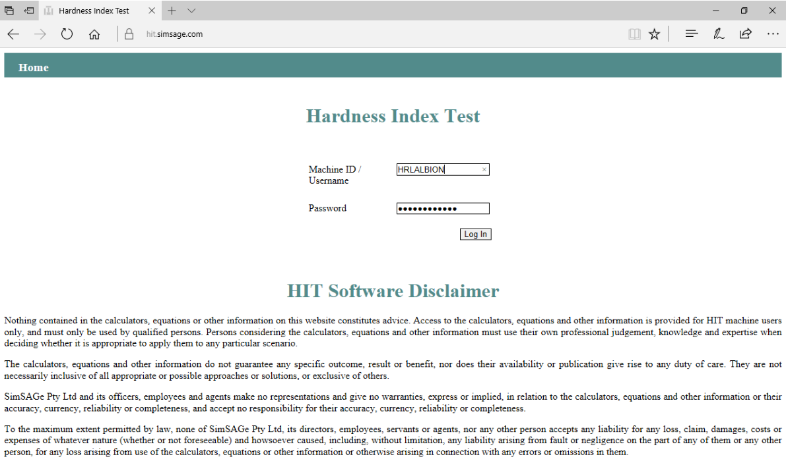
Log-in using the supplied Username and Password.
The main software page will open, showing a range of data entry and calculation options, as shown in Figure 1.2 below.
Appendix 1 and 2 show examples of Excel files used and generated by the HOS.
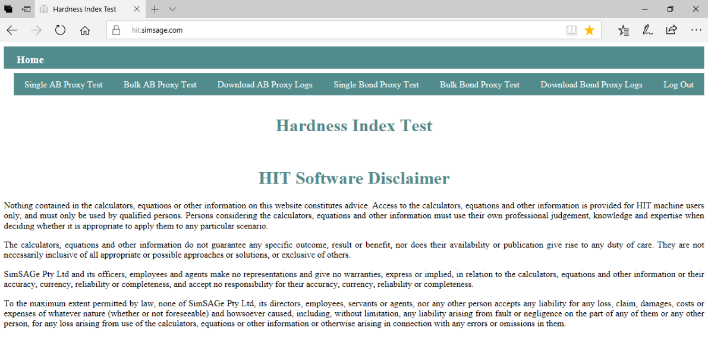
1.3Calculation Options
The HOS software options include the following calculation and download options:
- Single AB Proxy Test
- Bulk AB Proxy Test
- Download AB Proxy Logs
- Single BOND Proxy Test
- Bulk BOND Proxy Test
- Download BOND Proxy Logs
The above options are accessed by clicking on the respective header. The main functions of each option are described below.
Appendix 1 shows examples of Excel .csv files generated from the Data Entry spreadsheets, HIT Data Entry (Axb UNSORTED) 1SEP17 and HIT Data Entry (Bond Proxy UNSORTED) 1SEP17 for the demo data supplied.
Appendix 2 shows examples of the HOS interface for both the Bulk AB and Bulk BOND Proxy Tests, having uploaded the HITexportAB.csv and HITexportBOND.csv files for the respective calculations. The resulting Excel .csv file downloads are shown below each interface.
1.3.1Single AB Proxy Test
The Single AB Proxy Test is the best option to demonstrate the software on a single set of A*b proxy test raw data. Allows direct entry of inputs to software on screen, and immediate calculation of results, and optional download to Excel 'ab download.csv' file. By using 'save as' the user can select a different file name. The file will be downloaded to the Windows Downloads folder. An example set of data for the Single AB Proxy Test is shown in Table 1.1. The HOS screen post processing of the user entered data is shown in Figure 1.3.
Table 1.1: Example Data for Single AB Proxy Test
| Job # | XYZ |
| Client sample ID | XYZ-001 100-103 |
| Date | 04/03/2017 |
| Technician | TESTER |
| Rock Upper Size (mm): | 22.4 |
| Rock Lower Size (mm): | 19.0 |
| No. Particles | 10 |
| Initial mass (g) | 160.25 |
| After breakage (g) | 160.21 |
| OVERSIZE (g) | 148.57 |
| UNDERSIZE (g) | 11.6 |
| q factor (size effect) | 0.58 |
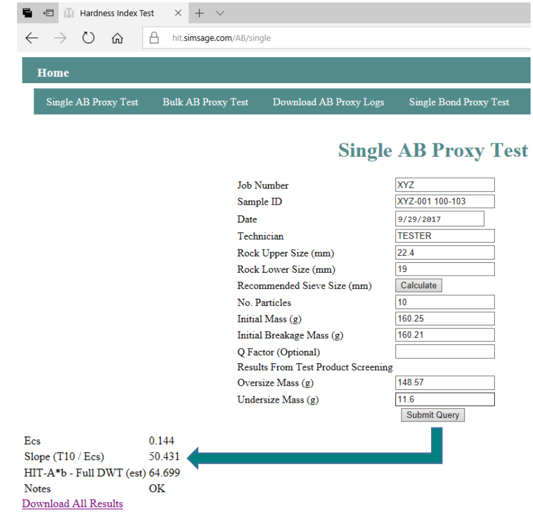
1.3.2Bulk AB Proxy Test
The Bulk AB Proxy Test is the best option for processing multiple sets of A*b proxy test raw data. This option allows upload of user specified Excel .csv file, automatically generated from the Excel Data Entry files. The 'upload and submit for calculation' generates an Excel 'ab download.csv' file with the latest results contained in the associated Excel .csv file. By using 'save as' the user can select a different file name.
There are two Excel Data Entry file options, depending on whether the user has elected to sort the rocks prior to testing, 'HIT Data Entry (Axb SORTED) 1SEP17', or simply randomly selected a set of rocks post sizing, 'HIT Data Entry (Axb UNSORTED) 1SEP17'. Both templates allow users to enter up to 100 sets of data in column format, and can be renamed. Each template also includes a Macro to transfer the key inputs to a user specified Excel .csv name and location, required for upload to the AWS software. The user needs to keep track of the file name and its location before uploading to the HOS.
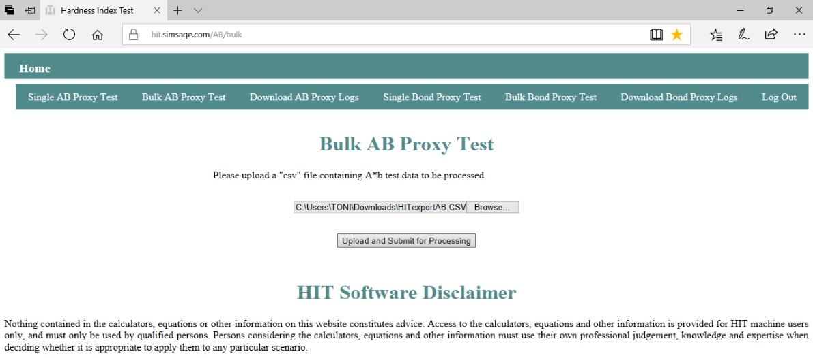
1.3.3Download AB Proxy Logs
The Download AB Proxy Logs allows download of all tests processed with HOS to Excel 'ab download.csv' file. By using 'save as' user can select a different file name. The file will be downloaded to the Windows Downloads folder. The results are listed chronologically, showing the most recent at the top of the page, as shown in Figure 1.5.
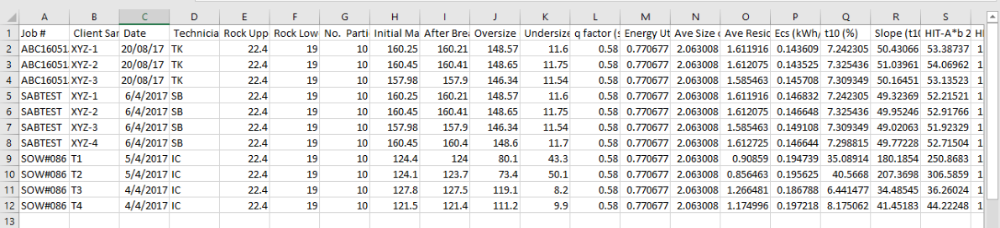
1.3.4Effect of Size on Axb Parameter
The HOS allows the user to enter a Q factor which controls the Axb parameter scale-up from the test rock size to the nominal DWT average rock size (~32mm). The scale-up is based on the simple power expression published by Frank, Kojovic and Brennan (2015). The default Q value used by the HOS is 0.58 reflecting the average observed in DWT testing, as published on the SMC Testing website (Morrell, 2017). Values closer to 1.0 indicate no softening with size, whereas Q values around 0.2 indicate a strong influence of size on the impact strength.
1.3.5Single BOND Proxy Test
The Single BOND Test is the best option to demonstrate the software on a single set of BOND proxy test raw data. This option allows direct entry of inputs to software on screen, and immediate calculation of results, and optionally download to Excel 'bond download.csv' file. By using 'save as' the user can select a different file name. The file will be downloaded to the Windows Downloads folder. An example set of data for the Single BOND Proxy Test is shown in Table 1.2. The HOS screen post processing of the user entered data is shown in Figure 1.6.
Table 1.2: Example Data for Single BOND Proxy Test
| Job # | ABC160515 |
| Client sample ID | XYZ-001 100-103 |
| Date | 09/07/2017 |
| Technician | TESTER |
| Rock Upper Size (mm): | 11.2 |
| Rock Lower Size (mm): | 9.5 |
| No. Particles | 20 |
| Initial mass (g) | 40.9 |
| +3.35mm | 13.84 |
| +2.36mm | 6.32 |
| +1.18mm | 8.94 |
| +0.600mm | 4.70 |
| +0.150mm | 4.14 |
| −0.150mm | 2.74 |
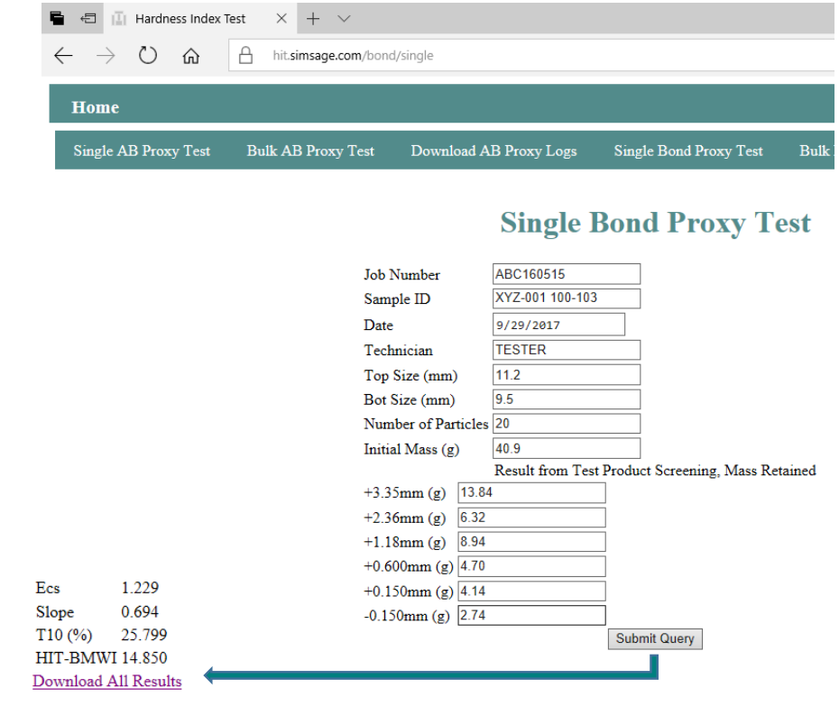
1.3.6Bulk BOND Proxy Test
The Bulk BOND Proxy Test is the best option for processing multiple sets of BOND proxy test raw data. This option allows upload of user specified Excel .csv file, automatically generated from the Excel Data Entry file. The 'upload and submit for calculation' generates an Excel 'bond download.csv' file. By using 'save as' the user can select a different file name.
The Excel data entry template, 'HIT Data Entry (Bond Proxy UNSORTED) 1APR17', allows users to enter up to 100 sets of data in column format, and can be renamed. The template also includes a Macro to transfer the key inputs to a user specified Excel .csv name and location, required for upload to the AWS software. The user needs to keep track of the file name and its location before uploading to the HOS.
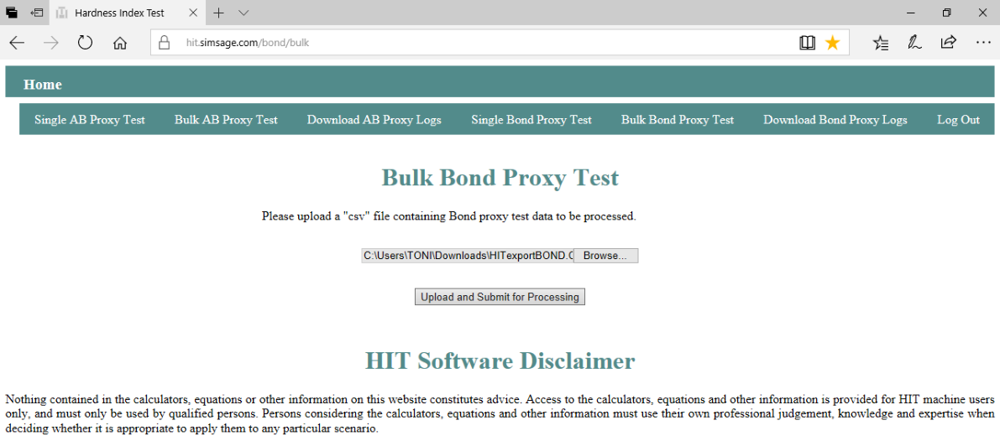
1.3.7Download BOND Proxy Logs
The Download BOND Proxy Logs allows download of all BOND tests processed with software to Excel 'bond download.csv' file. By using 'save as' the user can select a different file name. The file will be downloaded to the Windows Downloads folder. The results are listed chronologically, showing the most recent at the top of the page, as shown in Figure 1.8.
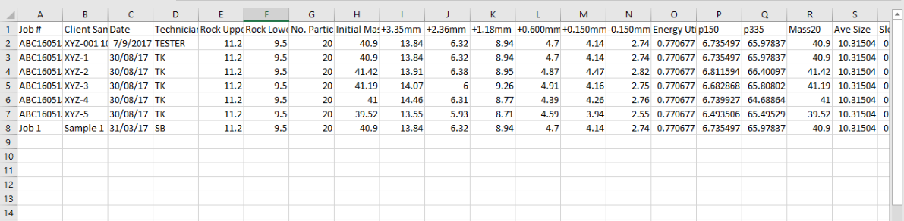
1.4Bond BMWi Calibration Model
The HOS uses a default empirical model based on the measured HIT Bond Proxy Test results to estimate the Bond BMWi. This approach approximates the BMWi for which additional Bond BMWi testing may be warranted to confirm the accuracy of the default model, depending on the intended use of the data. The indicated 7 % average relative error suggests the HIT Bond proxy test should provide sufficient accuracy to rank samples into 2 kWh/t bins (Bergeron et al, 2017).
The coefficients in the default empirical model were calibrated using 106 samples covering eight ore deposits. To accommodate changes in the closed screen setting and other unknown factors, the HOS includes one site-specific constant. However, if required the model could be further adjusted should that be required. This is included in the SimSAGe technical assistance covered by the HIT lease agreement.
1.5References
- Bergeron, Y., Kojovic, T., Gagnon, M-d-N. and Okono, P., 2017. Applicability of the HIT for Evaluating Comminution and Geomechanical Parameters from Drill Core Samples — The Odyssey Project Case Study, Proceedings from COM2017, Vancouver, August.
- Kojovic, T., 2017. HIT v1.2 User's Guide. SimSAGe Pty Ltd document, 28th July, 18 pp.
- Morrell, S., 2017. About the SMC Test®. http://www.smctesting.com/about/technical-information.
- Shi, F., Kojovic, T. and Brennan, M., 2015. Modelling of Vertical Spindle Mills - Part 1: Sub-Models for Comminution and Classification. Fuel (143), pp595-601.
1.6Disclaimer
- SimSAGe Pty Ltd and its employees make reasonable efforts to ensure an accurate understanding of client requirements. The information in this document is based on that understanding and SimSAGe Pty Ltd strives to be accurate in its advice.
- While reasonable care has been taken in the preparation of this document, this document and all information, assumptions, and recommendations herein are published, given, made or expressed without any responsibility whatsoever on the part of SimSAGe Pty Ltd, whether arising by way of negligence, breach of contract, breach of statutory duty or otherwise.
- No warranty or representation of accuracy or reliability in respect of the document is given by SimSAGe Pty Ltd or its directors, employees, servants, agents, consultants, successors in title or assigns.
- This disclaimer shall apply to liability to any person whatsoever, irrespective of how such liability arises, whether by use of this document by that person or you or any other person or otherwise.
- You shall indemnify SimSAGe Pty Ltd and its directors, employees, servants, agents, consultants, successors in title or assigns against any claim made against any or all of them by third parties arising out of the disclosure of this document, whether directly or indirectly, to a third party.
Appendices
Appendix 1 — Example Excel .csv Files generated from HIT Data Entry Spreadsheets
"HITexportAB.csv" from HIT Data Entry (Axb UNSORTED) 1SEP17:
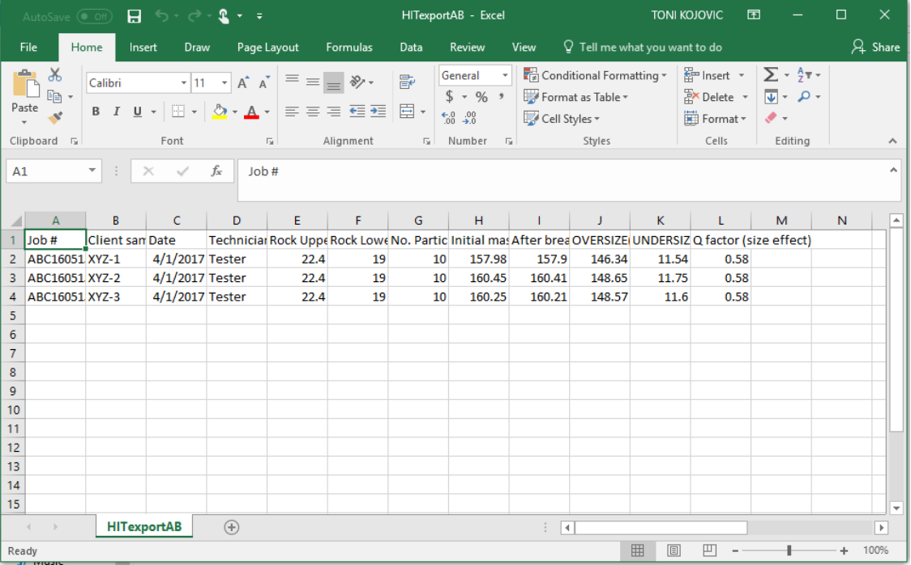
"HITexportBOND.csv" from HIT Data Entry (Bond Proxy UNSORTED) 1SEP17:
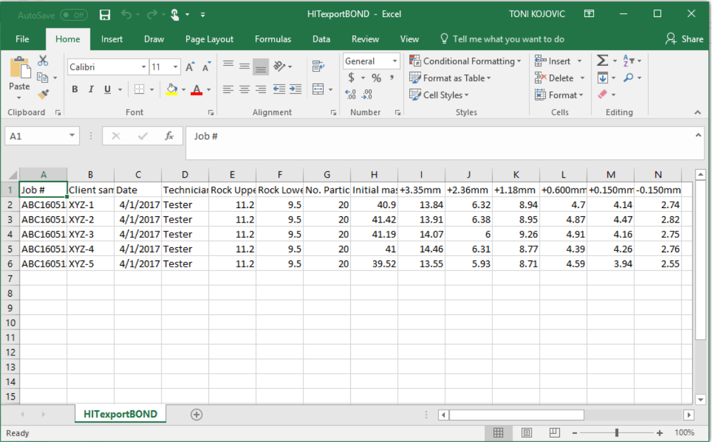
Appendix 2a — Bulk AB Proxy Test Upload and Excel .csv Download File
HIT Online Software Bulk AB Test interface after clicking "Upload and Submit for Processing":
Excel "ab download.csv" file (with inputs and results) automatically generated by HOS:
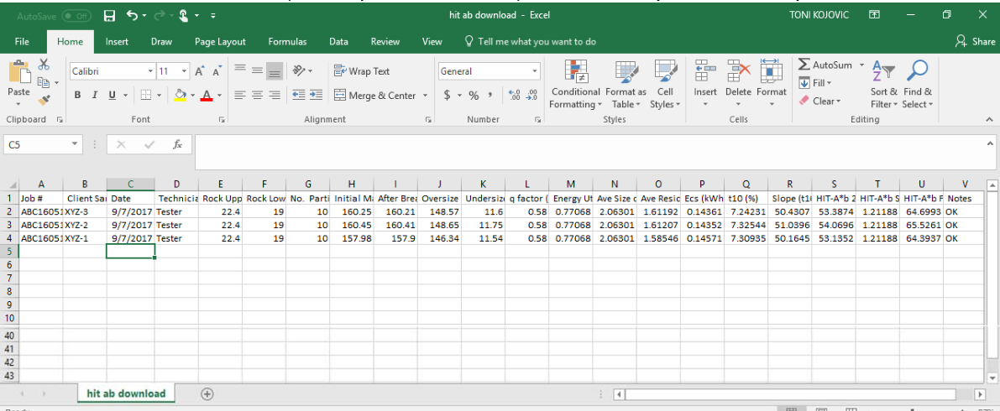
Appendix 2b — Bulk BOND Proxy Test Upload and Excel .csv Download File
HIT Online Software Bulk Bond Proxy Test interface after clicking "Upload and Submit for Processing":
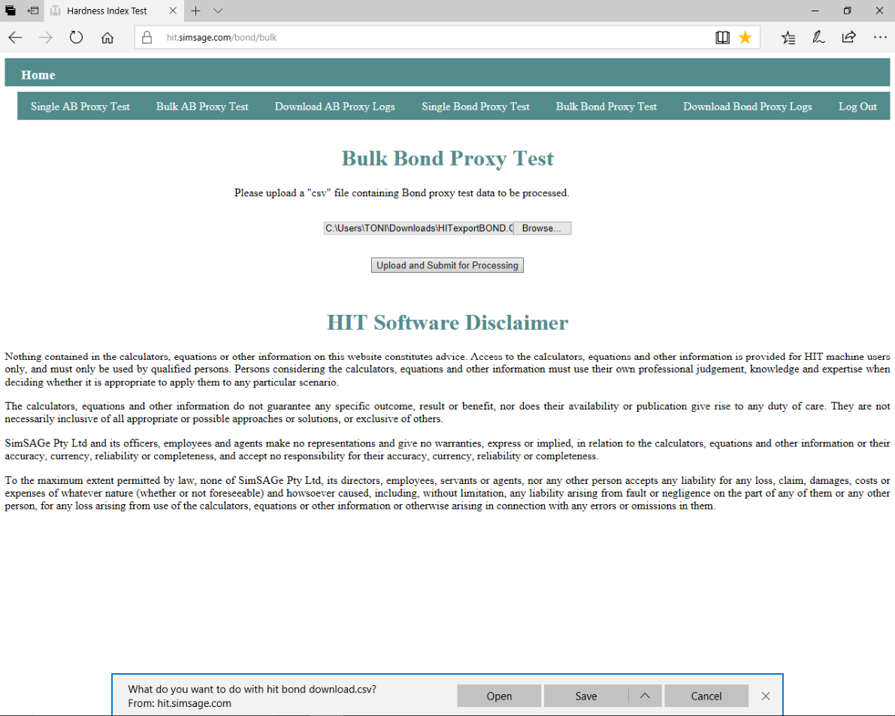
Excel "bond download.csv" file (with inputs and results) automatically generated by HOS:
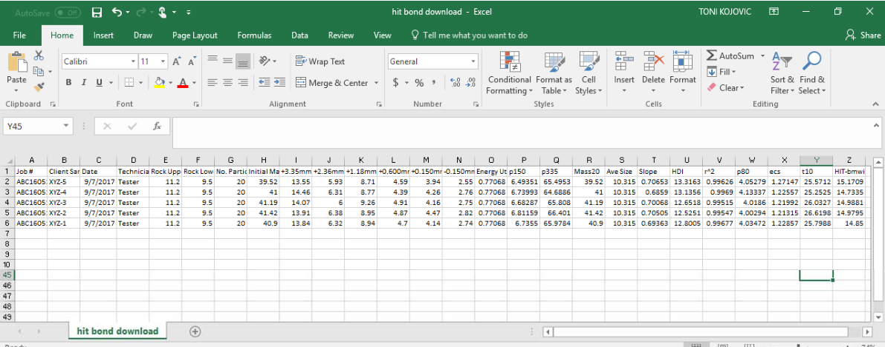